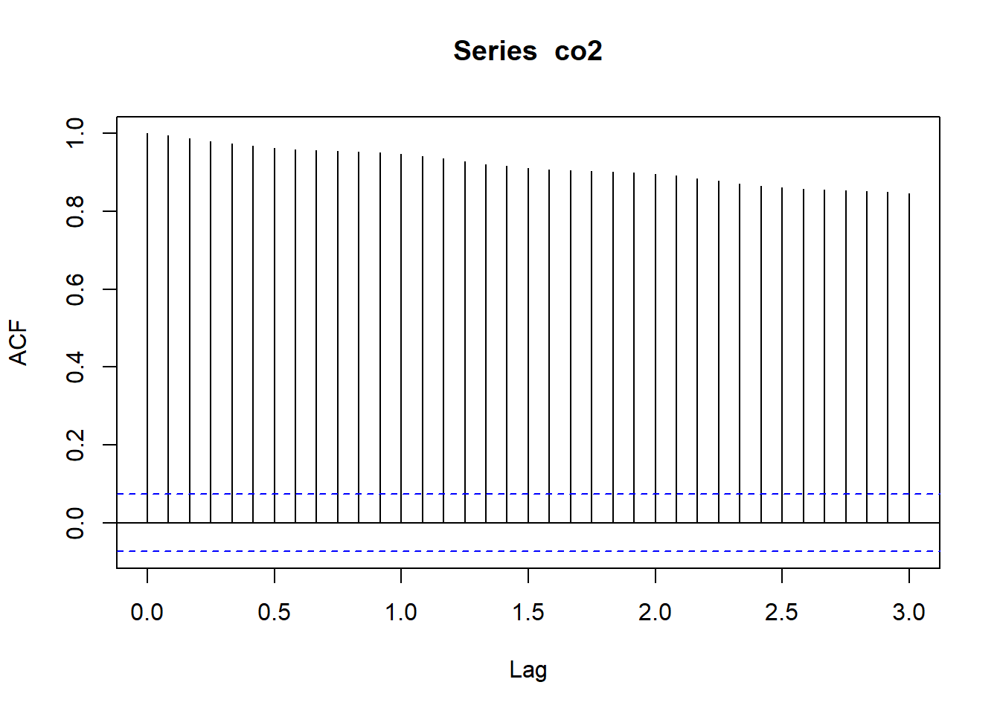
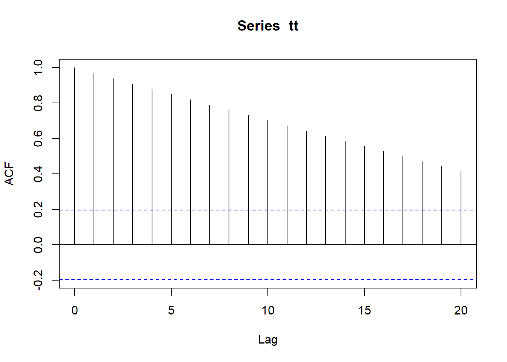

4.4 Correlation within and among time series
The concepts of covariance and correlation are very important in time series analysis. In particular, we can examine the correlation structure of the original data or random errors from a decomposition model to help us identify possible form(s) of (non)stationary model(s) for the stochastic process.
4.4.1 Autocorrelation function (ACF)
Autocorrelation is the correlation of a variable with itself at differing time lags. Recall from lecture that we defined the sample autocovariance function (ACVF), \(c_k\), for some lag \(k\) as
\[\begin{equation} \tag{4.10} c_k = \frac{1}{n}\sum_{t=1}^{n-k} \left(x_t-\bar{x}\right) \left(x_{t+k}-\bar{x}\right) \end{equation}\]
Note that the sample autocovariance of \(\{x_t\}\) at lag 0, \(c_0\), equals the sample variance of \(\{x_t\}\) calculated with a denominator of \(n\). The sample autocorrelation function (ACF) is defined as
\[\begin{equation} \tag{4.11} r_k = \frac{c_k}{c_0} = \text{Cor}(x_t,x_{t+k}) \end{equation}\]
Recall also that an approximate 95% confidence interval on the ACF can be estimated by
\[\begin{equation} \tag{4.12} -\frac{1}{n} \pm \frac{2}{\sqrt{n}} \end{equation}\]
where \(n\) is the number of data points used in the calculation of the ACF.
It is important to remember two things here. First, although the confidence interval is commonly plotted and interpreted as a horizontal line over all time lags, the interval itself actually grows as the lag increases because the number of data points \(n\) used to estimate the correlation decreases by 1 for every integer increase in lag. Second, care must be exercised when interpreting the “significance” of the correlation at various lags because we should expect, a priori, that approximately 1 out of every 20 correlations will be significant based on chance alone.
We can use the acf() function in R to compute the sample ACF (note that adding the option type = "covariance" will return the sample auto-covariance (ACVF) instead of the ACF–type ?acf for details). Calling the function by itself will will automatically produce a correlogram (i.e., a plot of the autocorrelation versus time lag). The argument lag.max allows you to set the number of positive and negative lags. Let’s try it for the CO\(_2\) data.
Figure 4.10: Correlogram of the observed atmospheric CO\(_2\) concentration at Mauna Loa, Hawai’i obtained with the function acf().
There are 4 things about Figure 4.10 that are noteworthy:
- the ACF at lag 0, \(r_0\), equals 1 by default (i.e., the correlation of a time series with itself)–it’s plotted as a reference point;
- the \(x\)-axis has decimal values for lags, which is caused by R using the year index as the lag rather than the month;
- the horizontal blue lines are the approximate 95% CI’s; and
- there is very high autocorrelation even out to lags of 36 months.
As an alternative to the default plots for acf objects, let’s define a new plot function for acf objects with some better features:
## better ACF plot
plot.acf <- function(ACFobj) {
rr <- ACFobj$acf[-1]
kk <- length(rr)
nn <- ACFobj$n.used
plot(seq(kk), rr, type = "h", lwd = 2, yaxs = "i", xaxs = "i",
ylim = c(floor(min(rr)), 1), xlim = c(0, kk + 1), xlab = "Lag",
ylab = "Correlation", las = 1)
abline(h = -1/nn + c(-2, 2)/sqrt(nn), lty = "dashed", col = "blue")
abline(h = 0)
}Now we can assign the result of acf() to a variable and then use the information contained therein to plot the correlogram with our new plot function.
## acf of the CO2 data
co2_acf <- acf(co2, lag.max = 36)
## correlogram of the CO2 data
plot.acf(co2_acf)
Figure 4.11: Correlogram of the observed atmospheric CO\(_2\) concentration at Mauna Loa, Hawai’i obtained with the function plot.acf().
Notice that all of the relevant information is still there (Figure 4.11), but now \(r_0=1\) is not plotted at lag-0 and the lags on the \(x\)-axis are displayed correctly as integers.
Before we move on to the PACF, let’s look at the ACF for some deterministic time series, which will help you identify interesting properties (e.g., trends, seasonal effects) in a stochastic time series, and account for them in time series models–an important topic in this course. First, let’s look at a straight line.
## length of ts
nn <- 100
## create straight line
tt <- seq(nn)
## set up plot area
par(mfrow = c(1, 2))
## plot line
plot.ts(tt, ylab = expression(italic(x[t])))
## get ACF
line.acf <- acf(tt, plot = FALSE)
## plot ACF
plot.acf(line.acf)
Figure 4.12: Time series plot of a straight line (left) and the correlogram of its ACF (right).
The correlogram for a straight line is itself a linearly decreasing function over time (Figure 4.12).
Now let’s examine the ACF for a sine wave and see what sort of pattern arises.
## create sine wave
tt <- sin(2 * pi * seq(nn)/12)
## set up plot area
par(mfrow = c(1, 2))
## plot line
plot.ts(tt, ylab = expression(italic(x[t])))
## get ACF
sine_acf <- acf(tt, plot = FALSE)
## plot ACF
plot.acf(sine_acf)Figure 4.13: Time series plot of a discrete sine wave (left) and the correlogram of its ACF (right).
Perhaps not surprisingly, the correlogram for a sine wave is itself a sine wave whose amplitude decreases linearly over time (Figure 4.13).
Now let’s examine the ACF for a sine wave with a linear downward trend and see what sort of patterns arise.
## create sine wave with trend
tt <- sin(2 * pi * seq(nn)/12) - seq(nn)/50
## set up plot area
par(mfrow = c(1, 2))
## plot line
plot.ts(tt, ylab = expression(italic(x[t])))
## get ACF
sili_acf <- acf(tt, plot = FALSE)
## plot ACF
plot.acf(sili_acf)Figure 4.14: Time series plot of a discrete sine wave (left) and the correlogram of its ACF (right).
The correlogram for a sine wave with a trend is itself a nonsymmetrical sine wave whose amplitude and center decrease over time (Figure 4.14).
As we have seen, the ACF is a powerful tool in time series analysis for identifying important features in the data. As we will see later, the ACF is also an important diagnostic tool for helping to select the proper order of \(p\) and \(q\) in ARMA(\(p\),\(q\)) models.
4.4.2 Partial autocorrelation function (PACF)
The partial autocorrelation function (PACF) measures the linear correlation of a series \(\{x_t\}\) and a lagged version of itself \(\{x_{t+k}\}\) with the linear dependence of \(\{x_{t-1},x_{t-2},\dots,x_{t-(k-1)}\}\) removed. Recall from lecture that we define the PACF as
\[\begin{equation} \tag{4.13} f_k = \begin{cases} \text{Cor}(x_1,x_0)=r_1 & \text{if } k = 1;\\ \text{Cor}(x_k-x_k^{k-1},x_0-x_0^{k-1}) & \text{if } k \geq 2; \end{cases} \end{equation}\]
with
It’s easy to compute the PACF for a variable in R using the pacf() function, which will automatically plot a correlogram when called by itself (similar to acf()). Let’s look at the PACF for the CO\(_2\) data.
The default plot for PACF is a bit better than for ACF, but here is another plotting function that might be useful.
## better PACF plot
plot.pacf <- function(PACFobj) {
rr <- PACFobj$acf
kk <- length(rr)
nn <- PACFobj$n.used
plot(seq(kk), rr, type = "h", lwd = 2, yaxs = "i", xaxs = "i",
ylim = c(floor(min(rr)), 1), xlim = c(0, kk + 1), xlab = "Lag",
ylab = "PACF", las = 1)
abline(h = -1/nn + c(-2, 2)/sqrt(nn), lty = "dashed", col = "blue")
abline(h = 0)
}
Figure 4.15: Correlogram of the PACF for the observed atmospheric CO\(_2\) concentration at Mauna Loa, Hawai’i obtained with the function pacf().
Notice in Figure 4.15 that the partial autocorrelation at lag-1 is very high (it equals the ACF at lag-1), but the other values at lags > 1 are relatively small, unlike what we saw for the ACF. We will discuss this in more detail later on in this lab.
Notice also that the PACF plot again has real-valued indices for the time lag, but it does not include any value for lag-0 because it is impossible to remove any intermediate autocorrelation between \(t\) and \(t-k\) when \(k=0\), and therefore the PACF does not exist at lag-0. If you would like, you can use the plot.acf() function we defined above to plot the PACF estimates because acf() and pacf() produce identical list structures (results not shown here).
As with the ACF, we will see later on how the PACF can also be used to help identify the appropriate order of \(p\) and \(q\) in ARMA(\(p\),\(q\)) models.
4.4.3 Cross-correlation function (CCF)
Often we are interested in looking for relationships between 2 different time series. There are many ways to do this, but a simple method is via examination of their cross-covariance and cross-correlation.
We begin by defining the sample cross-covariance function (CCVF) in a manner similar to the ACVF, in that
\[\begin{equation} \tag{4.14} g_k^{xy} = \frac{1}{n}\sum_{t=1}^{n-k} \left(y_t-\bar{y}\right) \left(x_{t+k}-\bar{x}\right), \end{equation}\]
but now we are estimating the correlation between a variable \(y\) and a different time-shifted variable \(x_{t+k}\). The sample cross-correlation function (CCF) is then defined analogously to the ACF, such that
\[\begin{equation} \tag{4.15} r_k^{xy} = \frac{g_k^{xy}}{\sqrt{\text{SD}_x\text{SD}_y}}; \end{equation}\]
SD\(_x\) and SD\(_y\) are the sample standard deviations of \(\{x_t\}\) and \(\{y_t\}\), respectively. It is important to re-iterate here that \(r_k^{xy} \neq r_{-k}^{xy}\), but \(r_k^{xy} = r_{-k}^{yx}\). Therefore, it is very important to pay particular attention to which variable you call \(y\) (i.e., the “response”) and which you call \(x\) (i.e., the “predictor”).
As with the ACF, an approximate 95% confidence interval on the CCF can be estimated by
\[\begin{equation} \tag{4.16} -\frac{1}{n} \pm \frac{2}{\sqrt{n}} \end{equation}\]
where \(n\) is the number of data points used in the calculation of the CCF, and the same assumptions apply to its interpretation.
Computing the CCF in R is easy with the function ccf() and it works just like acf(). In fact, ccf() is just a “wrapper” function that calls acf(). As an example, let’s examine the CCF between sunspot activity and number of lynx trapped in Canada as in the classic paper by Moran.
To begin, let’s get the data, which are conveniently included in the datasets package included as part of the base installation of R. Before calculating the CCF, however, we need to find the matching years of data. Again, we’ll use the ts.intersect() function.
## get the matching years of sunspot data
suns <- ts.intersect(lynx, sunspot.year)[, "sunspot.year"]
## get the matching lynx data
lynx <- ts.intersect(lynx, sunspot.year)[, "lynx"]Here are plots of the time series.
Figure 4.16: Time series of sunspot activity (top) and lynx trappings in Canada (bottom) from 1821-1934.
It is important to remember which of the 2 variables you call \(y\) and \(x\) when calling ccf(x, y, ...). In this case, it seems most relevant to treat lynx as the \(y\) and sunspots as the \(x\), in which case we are mostly interested in the CCF at negative lags (i.e., when sunspot activity predates inferred lynx abundance). Furthermore, we’ll use log-transformed lynx trappings.
Figure 4.17: CCF for annual sunspot activity and the log of the number of lynx trappings in Canada from 1821-1934.
From Figures 4.16 and 4.17 it looks like lynx numbers are relatively low 3-5 years after high sunspot activity (i.e., significant correlation at lags of -3 to -5).